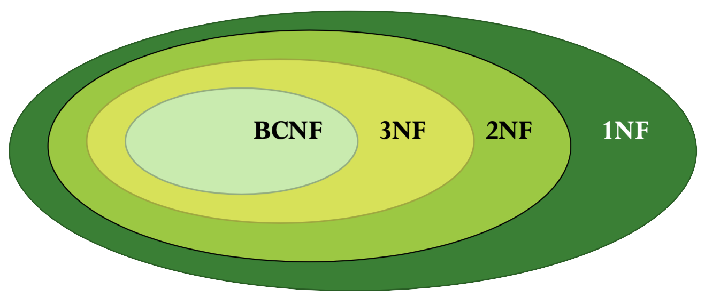
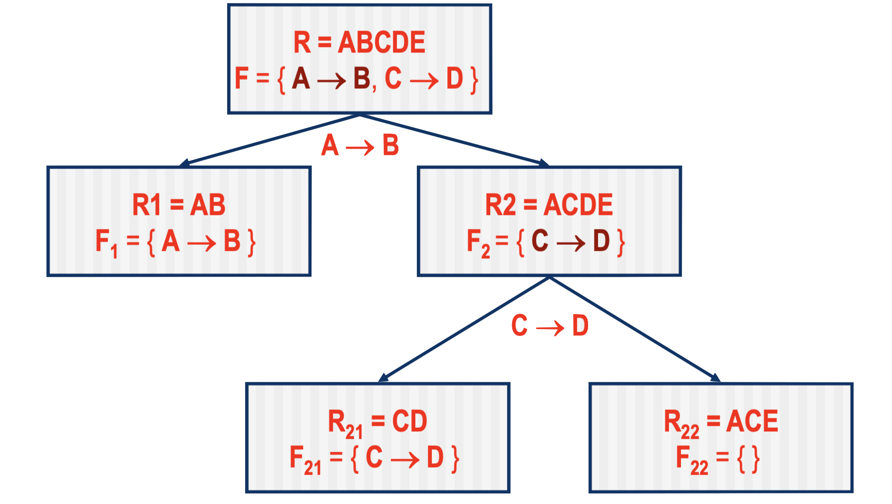
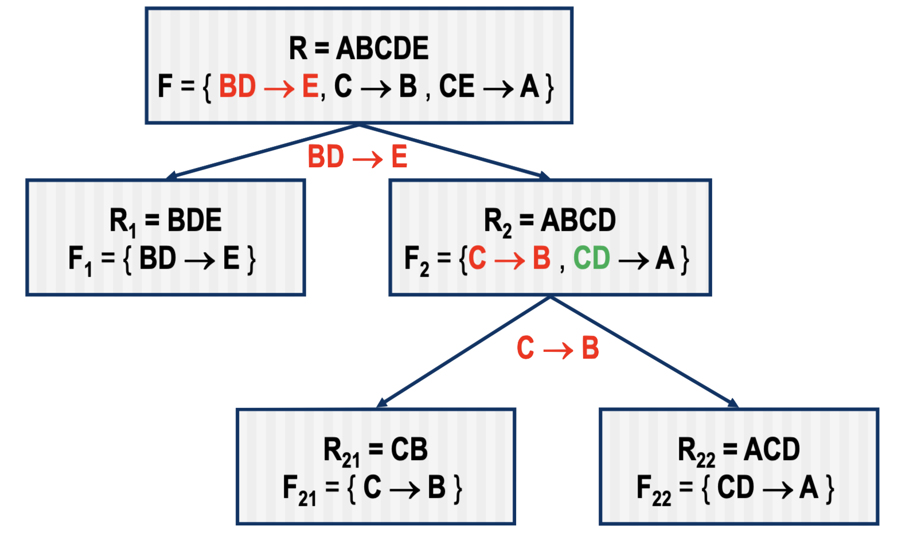
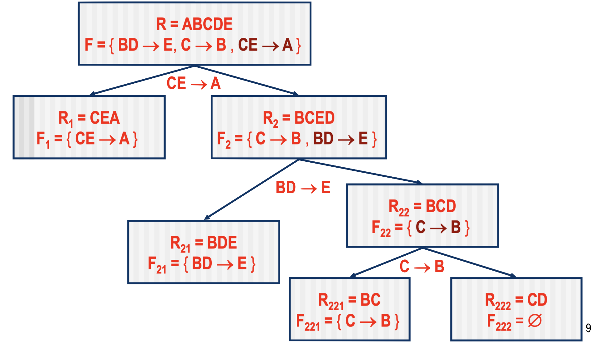

Normal Forms
We normalize to get rid of “extra” functional dependencies that causes redundancy and anomalies.
Normals Forms:
- First normal form (1NF): components of tuples must be atomic
- Second normal form (2NF): transitive FD’s still allowed, no FD whose LHS is a proper subset of a key
- Third normal form (3NF): LHS is superkey or RHS key subset
- Boyce-Codd normal form (BCNF): LHS is superkey

Each normal form gets a little stricter and gets rid of more anomalies.
1NF
- All keys are defined
- No repeating groups
- All attributes determined by the key (Project Number, Employee Name)
| Project Number | Project Name | Employee Name | Employee Age |
|----------------|--------------|---------------|--------------|
| 1 | XYZ | John | 42 |
| 1 | XYZ | Mike | 47 |
| 2 | ABC | Tim | 17 |
| 2 | ABC | John | 42 |
| 3 | JPL | Sam | 54 |
Fallbacks: if we delete project 3, we lose all the information about employee Sam.
2NF
- Already in 1NF
- No FD's whose LHS is a proper subset of a key
- i.e. no partial dependencies in which non-prime attributes depend only on part of a key.
Prime = an attribute that is part of a key.
Prime attributes = the attributes of the candidate key which defines the uniqueness
Ex = SSN number in an employee database
| Project Number |
Employee Name |
| 1 |
John |
| 1 |
Mike |
| 2 |
Tim |
| 2 |
John |
| 3 |
Sam |
| Project Number |
Project Name |
| 1 |
XYZ |
| 2 |
ABC |
| 3 |
JPL |
| Employee Name |
Employee Age |
| John |
42 |
| Mike |
47 |
| Tim |
17 |
| John |
42 |
| Sam |
54 |
3NF
- In 2NF already
- No transitive dependencies that consist of a non-prime attribute that determines another non-prime attribute.
Let R be a relation schema, F a set of FD’s on R A,X ∈ R.
We say R wrt F is in 3NF, if for every FD X → A in F, at least one of the following conditions holds:
- X → A is a trivial FD (A → X)
- X is a superkey
- If X is not a key, then A is part of some key of R
To determine if a relation <R, F> is in 3NF:
- Check if the LHS of each nontrivial FD in F is a superkey
- Check whether its RHSis part of any key of R
BCNF
Other than FDs where the left side is a superkey, NO other FDs are allowed in a table. PERIOD.
We say R wrt F is in is in Boyce-Codd normal form, if for every FD X → A in F, at least one of the following conditions holds:
- X → A is a trivial FD (A → X)
- X is a superkey
* 3NF ≡ BCNF when there is only one candidate key
To determine if a relation <R, F> is in BCNF:
- Check if the LHS of each nontrivial FD in F is a superkey
- Compute X+ (wrt F) and check if X+ = R
Decomposition into BCNF:
- Move the attributes of every non-superkey FD (both sides of the FD) into their own table
- Make sure that we have a common attribute(s) in the two tables that can be used to join the tables back together
- The common attribute(s) is typically the left side of the FD that we just moved into a new table
- Repeat until there are no non-superkey FDs left in any table.
BCNF can always obtain lossless-join decomposition
BCNF is not always dependency-preserving
Example:
What is they key? It has to be ACE since the attributes cannot be computed from existing FD's.

Example:
R = (Student, Topic, Professor)
R = (S,T,P)
FD = { ST → P , P → T }
| Student |
Topic |
Professor |
| Smith |
Math |
Dr. White |
| Smith |
Physics |
Dr. Greene |
| Wu |
Math |
Dr. White |
| Wu |
Physics |
Dr. Brown |
This is in 3NF but not BCNF. Specifically,the dependency P → T contains a LHS that is not a superkey, but the RHS is prime.
P → T is a BCNF violation because P is not a superkey.
R1
FD = {}
| Student |
Professor |
| Smith |
Dr. White |
| Smith |
Dr. Greene |
| Wu |
Dr. White |
| Wu |
Dr. Brown |
R2
FD = {P → T}
| Professor |
Topic |
| Dr. White |
Math |
| Dr. Greene |
Physics |
| Dr. Brown |
Physics |
üö® But we lost ST → P
Fuuuuuuuu... so you have to settle for a 3NF with a little redundancy.
Atleast it is guaranteed to be lossless and dependency preserving.
Example:

CE → A is nor preserved, since A ∉ {CE}+ wrt F1, F21, F22
To fix this we add a new relation R3 = CEA with F = {CE → A }
Example:

This 3NF decompositionis dependency preserving, and of course lossless-join
3NF Synthesis
3NF Synthesis = dependency preserving
- Create a table for each individual FD By definition
- By definition, this ensures FD preservation
- Normally, start with a minimal(canonical) cover in orer to reduce the number of tables.
- This does NOT ensure lossless join.
- Add a relation made up of the keys of the other tables
- This will allow us to join the new table to any of the ones created in the first step
Formally:
- Compute the cononical cover FC in F
- For each FD X → A in FC, add schema XA to R
- If the decomposition R is not lossless, add to R an extra relation schema containing just those attributes that form any key of R
Example:
R=(A,B,C)
F={A → B, C → B}
Decompose R into R1 = ( A, B ) and R2 = ( B, C )
Add R3 = (A,C)
The decomposition R = {R1, R2, R3} is both lossless and dependency-preserving
Check if dependenc is preserved
R=(A, B, C, D)
F={A → B , B → C, C → D}
Decomposed into:
R1 = ( A, B )
F1 = { A → B }
and
R2 = ( A, C , D)
F2 = { C → D, A → D, A → C }
Is the decomposition R = {R1, R2} dependency-preserving?
- Check if A → B is preserved
- Compute A+ under { A → B } U { C → D, A → D, A → C }
- A+ = { A, B, C, D }
- Check if B ∈ A+
- Yes
- Check if B → C is preserved
- Compute B+ under { B → C } U { C → D, A → D, A → B }
- B+ = { B }
- Check if C ∈ B+
- NO
- B → C is not preserved
The decomposition is not dependency-preserving